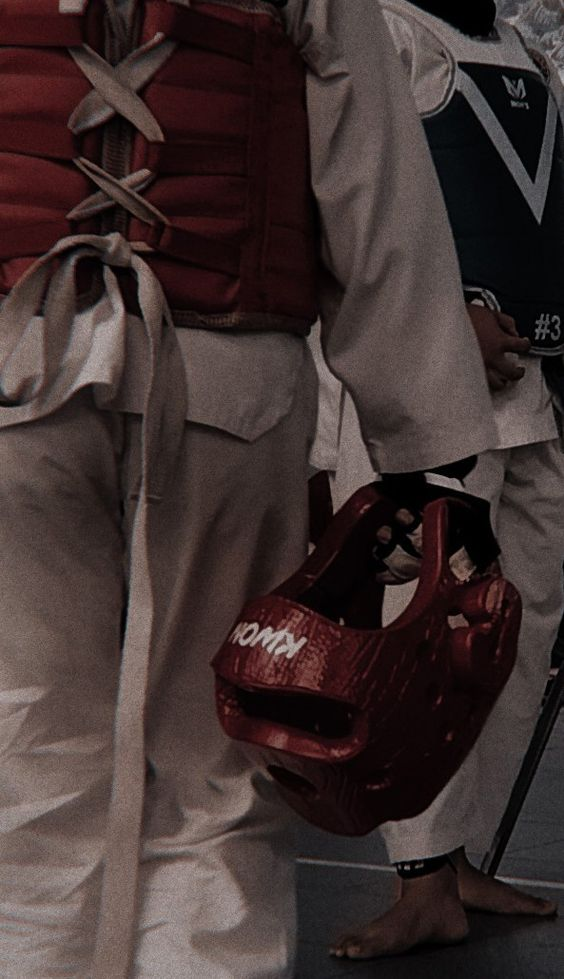
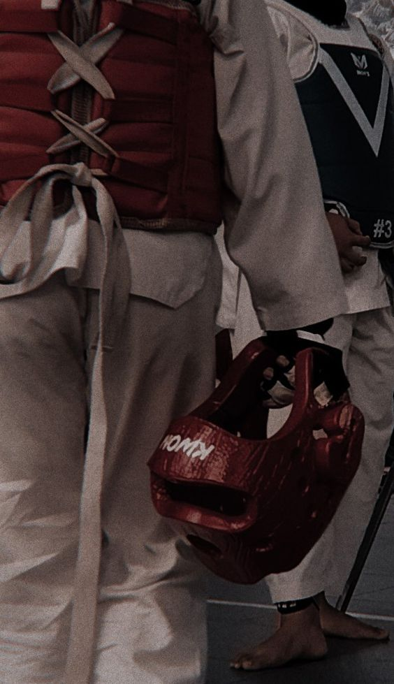

Taekwondo🥋
Faixas
- Faixa Branca / é a semente 🤍
- Branca ponta Amarela 🤍💛
- Faixa Amarela/ é a terra 💛
- Amarela ponta Verde 💛💚
- Faixa Verde/ é a planta💚
- Verde ponta Azul 💚💙
- Faixa Azul/ é o céu 💙
- Azul ponta Vermelha 💙💖
- Faixa Vermelha/ é o sol 💖
- Vermelha ponta Preta 💖🖤
- Faixa Preta/ o universo 🖤
Juramento do faixa Preta
Juro: 1- Manter sempre o espírito do Taekwondo, não parando de treinar até o fim de minha existência.
2- Cumprir o regulamento do Taekwondo, procurando jamais errar, pois eu sou faixa preta de Taekwondo.
3- Respeitar e obedecer por toda a minha existência a pessoa e os ensinamentos de meu mestre.
4- Respeitar e obedecer sempre os mais graduados do que eu e tratar com amor e carinho os menos graduados, e compreender que se eu não o fizer, estarei pronto a receber as penalidades existentes.
 
Clique para ver a Minha Historia

Clique para ver a Minha Historia